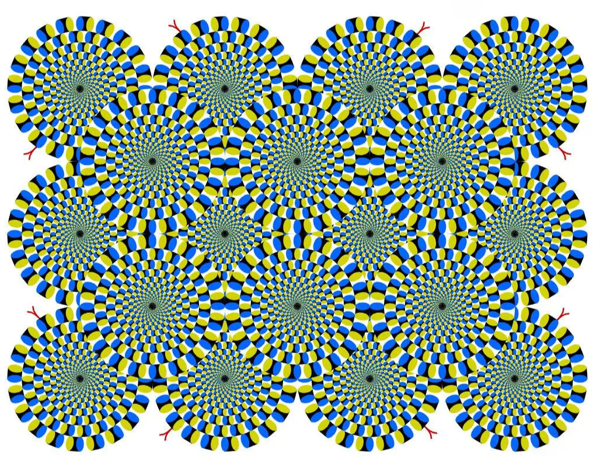
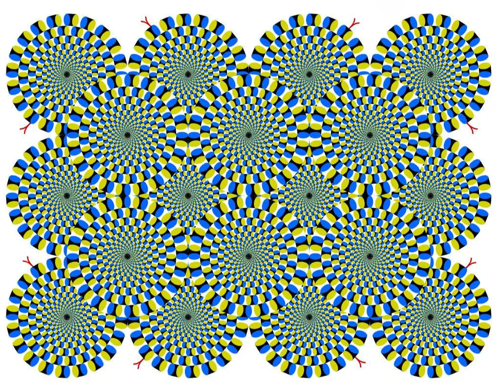

What are Optical illusions?

.webp)
What are Optical illusions?
An optical illusion is a visual phenomenon that deceives the eyes, leading the brain to perceive something different from reality. These illusions can arise from the way light and shadow interact, the arrangement of images, or the colors used, tricking our brains into seeing things that aren't there, such as movement, distortion, or impossible objects. Optical illusions demonstrate how our perception is not always a direct reflection of the world around us but is influenced by context, prior knowledge, and sensory interpretation.
Checker shadow illusion
Checker shadow illusion
The regions marked A and B are the same shade of gray!
The image depicts a checkerboard with light and dark squares, partly shadowed by another object. The optical illusion is that the area labeled A appears to be a darker color than the area labeled B. However, within the context of the two-dimensional image, they are of identical brightness, i.e., they would be printed with identical mixtures of ink, or displayed on a screen with pixels of identical color.

Stepping feet illusion

Stepping feet illusion
Both blocks are moving at the same speed on both strips!
The stepping feet illusion is a motion perception phenomenon involving two "buses," one blue and one yellow, moving horizontally across a "street" consisting of black and white stripes. Although both of the buses move at a constant speed, their perceived speed varies dramatically.

Explanation
When the blue bus lies on the white stripes, the contrast is high (dark blue vs. white) and easily visible, so it appears to move faster than its actual speed. On the contrary, when the blue bus is against the black stripes, the contrast is low (dark blue vs. black) and harder to see, so the movement looks slower.
Fraser spiral illusion

Fraser spiral illusion
There is no spiral there. These are all concentric circles!
The illusion is also known as the false spiral, or by its original name, the twisted cord illusion. The overlapping black arc segments appear to form a spiral; however, the arcs are a series of concentric circles. The visual distortion is produced by combining a regular line pattern (the circles) with misaligned parts (the differently colored strands).

Rotating snakes effect
 

Rotating snakes effect
Try looking each circle separately, others appears to be rotating but in reality are not!
A type of peripheral drift illusion, the "snakes" consist of several bands of color which resemble coiled serpents. Although the image is static, the snakes appear to be moving in circles. The speed of perceived motion depends on the frequency of microsaccadic eye movements.

Lilac chaser

Lilac chaser
Look at center, a green dot will seems to appear with purple ones disappear!
Also known as the Pac-Man illusion, it consists of 12 lilac blurred discs arranged in a circle, around a small black, central cross on a grey background. One of the discs disappears briefly (for about 0.1 seconds), then the next (about 0.125 seconds later), and the next, and so on, in a clockwise direction. When one stares at the cross for a few seconds, one sees three illusions:
- A gap running around the circle of lilac discs;
- A green disc running around the circle of lilac discs in place of the gap; and
- The green disc running around on the grey background, with the lilac discs having disappeared in sequence.
Stroboscopic effect

Stroboscopic effect
Depending on the frequency of flash, the element appears motionless or rotating in reverse direction!
The stroboscopic effect is a visual phenomenon caused by aliasing that occurs when continuous rotational or other cyclic motion is represented by a series of short or instantaneous samples (as opposed to a continuous view) at a sampling rate close to the period of the motion. It accounts for the "wagon-wheel effect", so-called because in video, spoked wheels (such as on horse-drawn wagons) sometimes appear to be turning backwards.

Sander illusion

Sander illusion
Both of the blue lines are of same length!
The diagonal line bisecting the larger, left-hand parallelogram appears to be considerably longer than the diagonal line bisecting the smaller, right-hand parallelogram, but it is the same length.

Hermann grid illusion

Hermann grid illusion
Dark blobs seems to appear at the intersections!
The Hermann grid illusion is an optical illusion reported by Ludimar Hermann in 1870. The illusion is characterized by "ghostlike" grey blobs perceived at the intersections of a white (or light-colored) grid on a black background. The grey blobs disappear when looking directly at an intersection.

Leaning tower illusion

Leaning tower illusion
The right tower seems to be more tilted than the left one but both are identical images!
The leaning tower illusion is a visual illusion seen in a pair of identical images of the Leaning Tower of Pisa photographed from below. Although the images are duplicates, one has the impression that the tower on the right leans more, as if photographed from a different angle.

Hybrid image

Hybrid image
From close it reads "Love", from far it reads "WAR"!
A hybrid image is an image that is perceived in one of two different ways, depending on viewing distance, based on the way humans process visual input. Perhaps the most familiar example is one featuring Albert Einstein and Marilyn Monroe. Looking at the picture from a short distance, one can see a sharp image of Einstein, with only a hint of blurry distortion hinting at the presence of an overlaid image. Viewed from a distance in which the fine detail blurs, the unmistakable face of Monroe emerges.